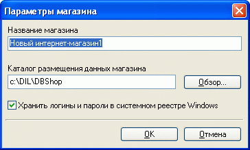
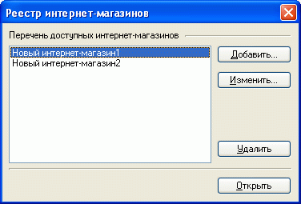

При первом запуске программы предлагается внести сведения о вновь создаваемом магазине: название и путь к каталогу для размещения данных. В данном случае под "названием магазина" понимается его условное наименование во внутреннем реестре магазинов (официальное название магазина, которое используется для договоров, счетов, накладных, задается в общих настройках магазина).
Программа Melbis Shop обеспечивает возможность работы с несколькими магазинами. Для каждого нового магазина рекомендуется создавать отдельную папку для размещения данных.
Опция "Хранить логины и пароли в системном реестре Windows" определяет, будут ли сохраняться задаваемые в параметрах подключения логин и пароль. В случае выбора этой опции хранение пароля осуществляется в зашифрованном виде.

Для учета магазинов создается реестр. Возможно добавление-удаление магазинов. При запуске программы она открывает тот магазин, с которым осуществлялась работа перед закрытием программы. Для изменения магазина, с которым производится работа, необходимо зайти в реестр магазинов, указать на необходимый и открыть его.
